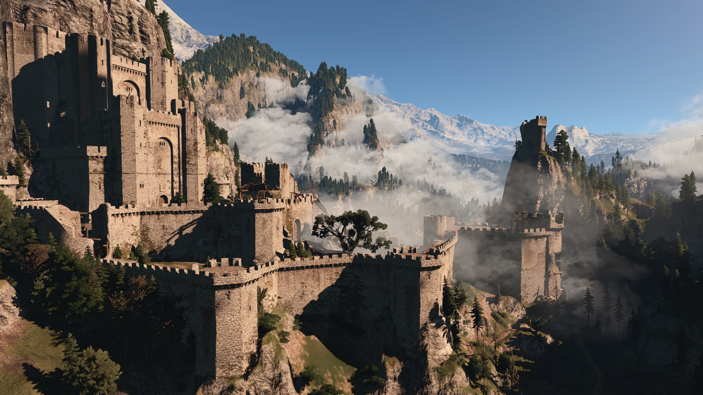

 Каэр Морхен (ориг. Kaer Morhen, искажённая Старшая Речь Caer a'Muirehen — Крепость Старого Моря) — горная крепость, в которой на протяжении нескольких веков располагалась одна из шести известных ведьмачьих школ — Школа Волка. Каэр Морхен находится далеко на севере Синих Гор — формально, на территории Каэдвена, однако мало кто знает о её существовании, а местонахождение и путь в крепость известны лишь избранным. Дорога в замок лежит меж высоких скал горного хребта. Найдя едва заметную щель, путник попадает в туннель, который со временем расширяется, а при выходе его взгляду открывается вид скалистой, окружённой горами долины и скрытой в ней крепости. Близ замка начинает своё течение Гвенллех, Река Белых Камней, которую нужно пересечь, чтобы добраться до крепости. Долина Каэр Морхен вытянута с юга, откуда через лес ведёт тропинка в замок — на север, где располагается большое озеро. В лесу, находящемся близ цитадели, проходит петляющая, едва заметная тропинка, названная молодыми ведьмаками «Мучильней» за свою сложность и опасность. На ней юные ученики совершенствовались в скорости бега и контроле дыхания.
Неизвестно, когда и кем была построена Крепость Старого Моря. Своё название она получила из-за того, что камни, использовавшиеся для возведения стен, содержат отпечатки древних морских ископаемых и раковин. После раскола первого ордена и оставления Моргрейга в долину, которая позже станет известна как Долина Каэр Морхен, пришли те из ведьмаков, кто был верен традиционным и первоначальным путям Цеха. В третьей части игры в западной части Долины Геральт может обнаружить пещеру, в которой ранее, до строительства замка, проводились мутации над молодыми людьми — это предполагает, что Каэр Морхен был возведён специально для ведьмаков, видимо, усилиями и магическим искусством их создателей-чародеев. На следующие несколько веков крепость стала домом и школой для рекрутов, проходивших подготовку, и взрослых охотников, некоторые из которых после обучения оставались в Каэр Морхене, чтобы передавать знания будущим поколениям ведьмаков. Также здесь жили чародеи, чьё присутствие и магическое искусство было необходимо для успешного протекания мутаций.
Когда деятельность охотников на чудовищ в значительной степени обезопасила жизнь людей, многие виды монстров были истреблены, а другие поставлены на грань вымирания, острая необходимость в ведьмаках отпала; кроме того, их количество стало достаточным для того, чтобы подготовленные охотники на чудовищ иногда бросали неприбыльное ведьмачье ремесло и шли в наёмные убийцы. Это, невежество, плохая репутация, вызванная деятельностью ведьмаков-наёмников, и подстёгиваемая анонимным памфлетом «Монструм, или Ведьмака описание» ксенофобия, привели к тому, что предположительно в 1180-х годах на Каэр Морхен было совершено нападение армии фанатиков, считавших ведьмаков безбожными выродками, чернокнижниками и существами, противными природе. В результате последовавшего сражения, погибли 22 из 23 находившихся в замке взрослых ведьмака (Весемиру, однако, удалось спастись), а также 40 молодых учеников и проходивших в тот момент мутации испытуемых.